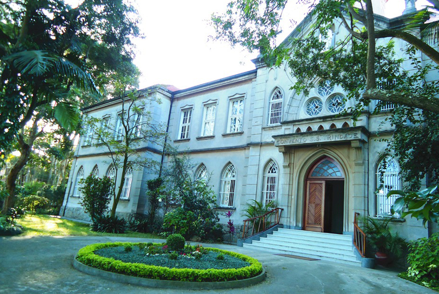

Quem Somos

Nós, Irmãs Missionárias Servas do Espírito Santo, somos uma comunidade religiosa, intercultural e internacional, presente nos 5 continentes, em 48 países. Nossa espiritualidade está fundamentada na Santíssima Trindade e, de maneira especial consagramos a vida ao Espírito Santo, fonte de todo dinamismo missionário.
Assim, nossa missão é tornar visível a presença transformadora de Deus estando presente junto aos pobres, marginalizados, refugiados, migrantes, mulheres marginalizadas, indígenas, doentes, encarcerados, vítimas da violência e do tráfico humano, enfim, onde a vida é mais ameaçada. Realizamos essa missão contando com pessoas de diversas culturas, credos e tradições através de muitos meios – presença, oração, trabalho social, escolas, hospitais, desenvolvimento sustentável, cuidado da criação – e de uma vasta rede de parceiros (as) com quem caminhamos juntos a fim de promover a dignidade humana e relações geradoras de vida.
História

A Congregação das Missionárias Servas do Espírito Santo surgiu do sonho missionário de Arnaldo Janssen, na segunda metade do século XIX. Com a colaboração de muitas pessoas, a aspiração desse jovem padre transformou-se numa família religiosa, que se iniciou com a fundação da Congregação do Verbo Divino, em Steyl, na Holanda. A Casa Missionária de Steyl tornou-se conhecida e atraiu a atenção de algumas jovens mulheres interessadas em associar-se a um projeto missionário de longo alcance. Foi assim que, com a colaboração indispensável de Maria Helena Stollenwerk (Madre Maria) e de Hendrina Stenmanns (Madre Josefa) e outras jovens aspirantes, em 8 de dezembro de 1889, foi fundada a Congregação das Missionárias Servas do Espírito Santo. Esse espírito missionário espalhou-se rapidamente por todo o mundo. 20 anos após a fundação, as irmãs já estavam presentes nos cinco continentes. As primeiras fundações foram Argentina (1905), Togo (1897, Papua Nova Guiné (1899), Estados Unidos (1901), Brasil (1902) e China (1905).
As Missionárias SSpS no Brasil

As primeiras 6 missionárias chegaram ao Brasil em 20 de agosto de 1902 e estabeleceram-se primeiramente em Juiz de Fora-MG, onde iniciaram o Colégio Stella Matutina. Com a vinda de mais irmãs, rapidamente se espalharam pelo Sul e Sudeste do Brasil. Durante a primeira metade do século vinte, as Missionárias SSpS dedicaram-se sobretudo à educação em colégios próprios e ao cuidado de doentes, em hospitais e Santas Casas. A partir da década de sessenta, com o advento do Concílio Vaticano II e das Conferências Episcopais Latino-Americanas de Medellín e Puebla, houve um apelo muito forte no sentido da opção preferencial pelos pobres. Várias irmãs foram viver nas periferias das grandes cidades e nos lugares mais carentes do interior do país. A partir de então, além dos serviços tradicionais na educação formal e nos hospitais, a missão passou a ser compreendida também e sobretudo como um serviço aos mais carentes e excluídos da sociedade.
Onde estamos hoje
No Brasil, as Missionárias Servas do Espírito Santo estão atualmente em 11 estados, organizadas em duas sedes administrativas: Na dimensão comunitária, somos provocados a refletir sobre os desafios que se apresentam no dia a dia nas comunidades, na Igreja, na sociedade. Precisamos ir além das limitações pessoais, sabendo que a missão é o maior tesouro. Como criar unidade nas diferentes maneiras de ser religioso, religiosa, cristão no dia de hoje em diferentes frentes de trabalho, como formação, vivências, visão de Igreja, culturas, partilha dos bens e interesses pessoais e comunitários? Só criando um diálogo de vivências comunitárias com respeito mútuo, interesses comuns e crescimento humano que aproximam o discurso da prática de vida. Cultivar os encontros e relacionamentos onde a vida familiar vai crescendo em exemplo e testemunho de fé como evangelizadores da Família Arnaldina. Cultivar verdadeiras amizades significa buscar valores em comum, aprender a gerenciar conflitos inerentes à convivência humana, um diálogo corajoso em refazer relações, momentos de partilha da fé, cultivar sonhos em comum, celebrar acontecimentos que reforçam a identidade. A figura a seguir propõe a “ecologia integral” como centro das atividades pastorais e comunitárias.
Província Stella Matutina-Brasil Norte
Com Sede em São Paulo-SP, no Convento Santíssima Trindade, têm comunidades nos estados de Minas Gerais, Rio de Janeiro, Tocantins e São Paulo.

Província Divina Sabedoria - Brasil Sul

Com sede em Ponta Grossa-PR, no Convento Espírito Santo, conta com irmãs nos estados do Rio Grande do Sul, Santa Catarina, Paraná.

Destaques
Província Stella Matutina
Rua São Benedito, 2146 - Santo Amaro - São Paulo - SP |
Tel. (11)
5547-7222


Província Spiritus Divinae Sapientiae
Rua Arnaldo Janssen, 320 - Cara-Cara - Ponta Grossa - PR |
Tel. (42) 3326 4091